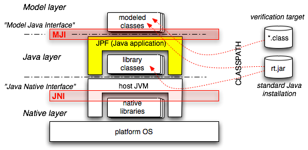
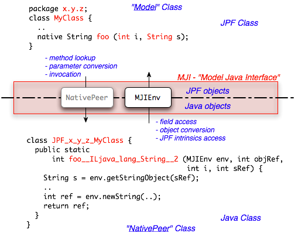
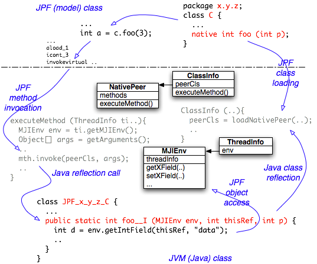
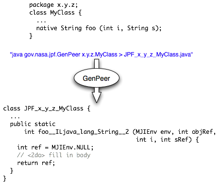
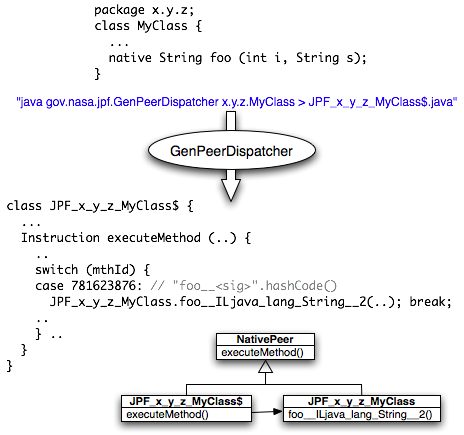

Figure 4: MJI name mangling
Even if it is just a Java application (i.e. solely consists of Java classes), JPF can be viewed as a Java Virtual Machine (JVM) in itself. The consequence is that (*.class) classfiles, and even the same files at times, are processed in two different ways in a JVM running JPF
Class lookup in both layers is based on the CLASSPATH environment variable / command line parameter, but this should not obfuscate the fact that we have to clearly distinguish between these two modes. In particular, JPF (i.e. the "Model" layer) has its own class and object model, which is completely different and incompatible to the (hidden) class and object models of the underlying host JVM executing JPF

Figure 1: JPF Java layers
Each standard JVM supports a so called "Java Native Interface" (JNI), that is used to delegate execution from the Java level (i.e. JVM controlled bytecode) down into the (platform dependent) native layer (machine code). This is normally used to interface certain functionalities to the platform OS / architecture (e.g. I/O or graphics).
Interestingly enough, there exists a analogous need to lower the "execution" level in JPF, from JPF controlled bytecode into JVM controlled bytecode. According to this analogy, the JPF specific interface is called "Model Java interface" (MJI).
Even though MJI offers a wide range of applications, there are three major usages for delegating bytecode execution into the host JVM:
(1) Interception of native methods - without a abstraction lowering mechanism, JPF would be forced to completely ignore native methods, i.e. would fail on applications relying on the side effects of such methods, which is not acceptable (even if many native methods indeed can be ignored if we restrict the set of verification targets)
(2) Interfacing of JPF system level functionality - some system level functions of standard library classes (esp. java.lang.Class, java.lang.Thread) have to be intercepted even if they are not native because they have to affect the JPF internal class, object and thread model (etc. loading classes, creating / starting threads). It should be noted that MJI can also be used to extend the functionality of JPF without changing its implementation.
(3) State space reduction - by delegating bytecode execution into the non-state-tracked host JVM, we can cut off large parts of the state space, provided that we know the corresponding method side effects are not relevant for property verification (e.g. System.out.println(..))
Besided these standard usages, there exist more exotic applications like collecting information about JPF state space exploration and making it available both to JPF and the verification target.
The basic functionality of MJI consists of a mechanism to intercept method invocations, and delegate them by means of Java reflection calls to dedicated classes. There are two types of classes involved, residing in different layers:
As part of the JPF implementation, MJI automatically takes care of determining which method invocations have to be intercepted, looking up the corresponding

Figure 2: MJI functions
But this would be not very useful without being able to access the JPF object model (or other JPF intrinsics), from inside the NativePeer methods. Instead of requiring all NativePeer implementations to reside in a JPF internal package, there exists a interface class MJIEnv that can be used to get back to JPF in a controlled way. NativePeers residing in gov.nasa.jpf.jvm (i.e. the same package like MJIEnv) can basically reach all internal JPF features. Outside this package, the available API in MJIEnv is mostly restricted to the access JPF object (getting and setting values).

Figure 3: MJI call sequence
Before a NativePeer method can be used, JPF has to establish the correspondence between the Model Class and the NativePeer. This takes place at load time of the Model Class. MJI uses a special name mangling scheme to lookup NativePeers, using the Model Class package name and class name to deduce the NativePeer class name.
Figure 4: MJI name mangling
Since the model class package is encoded in the NativePeer class name, the package of the NativePeer can be choosen freely. In analogy to JNI, NativePeer method names include the signature of the model method by encoding its parameter types. If there is no potential ambiguity, i.e. mapping from NativePeer to model class methods is unique, signature encoding is not required.
All native methods in a NativePeer have to be "public static" - there is no correspondence between JPF and JVM objects. Instead, MJI automatically adds two parameters: MJIEnv and objRef (classRef in case of static Model Class methods). The MJIEnv object can be used to get back to JPF, the objRef is a handle for the corresponding JPF "this" object (or the java.lang.Class object in case of a static method).
Going beyond the JNI analogy, MJI can also be used to intercept
It is important to note that type correspondence does NOT include references. All references (object types) on the JPF side are transformed in handles (int values) on the JVM side. The passed in MJIEnv parameter has to be used to convert/analyze the JPF object. Since MJI per default uses the standad Java reflection call mechanism, there is a significant speed penalty (lookup, parameter conversion etc.), which again is a analogy to JNI.
Even if it is not directly related to MJI, it should be mentioned that some JPF specific Model Classes cannot be loaded via the CLASSPATH (e.g. java.lang.Class), since they contain JPF based code that is not compatible with the host JVM (e.g. relying on native methods that refer to JPF functionality). Such classes should be kept in separate directories / jars that are specified with the JPF command line option "-jpf-bootclasspath" or "-jpf-classpath". This is mostly the case for system classes. On the other hand, Model Classes don't have to be JPF specific. It is perfectly fine to provide a NativePeer for a standard Java class (e.g. java.lang.Character), if only certain methods from that standard class needs to be intercepted. NativePeer classes can contain any number of non-"native" methods and fields, but those should not be "public static" to avoid problems lookup problems.
To ease the tedious process of manually mangle method names, MJI includes a tool to automatically create skeletons of NativePeer classes from a given Model class, called "GenPeer". The translation process uses Java reflection, i.e. the Model Class needs to be in the CLASSPATH and is specified in normal dot notation (i.e. not as a file).

Figure 5: MJI GenPeer tool
There exist a number of command line options that can be displayed by calling GenPeer without arguments. GenPeer per default writes to stdout, i.e. the output has to be redirected into a file.
Since NativePeer method invocations impose a significant (reflection call) overhead, there exists a mechanism to bypass the JVM method dispatching and the parameter conversion, called "NativePeer Dispatcher". This is implemented as a completely transparent NativePeer proxy that can be automatically generated by means of the GenPeerDispatcher tool

Figure 6: MJI GenPeerDispatcher tool
Depending on further improvements of target JVMs, this might not be required in the future and should only be considered for performance critical methods. The generated dispatcher class has the same name like the corresponding NativePeer, with a "$" suffix. It is looked up via the standard CLASSPATH (i.e. should be kept in the same directory / archive like the NativePeer).
The following example is an excerpt of a JPF regression test, showing how to intercept various different method types, and using MJIEnv to access JPF objects.
Model class:
public class TestNativePeer { static int sdata; static { // only here to be intercepted } int idata; TestNativePeer (int data) { // only here to be intercepted } public void testClInit () { if (sdata != 42) { throw new RuntimeException("native 'clinit' failed"); } } public void testInit () { TestNativePeer t = new TestNativePeer(42); if (t.idata != 42) { throw new RuntimeException("native 'init' failed"); } } native int nativeInstanceMethod (double d, char c, boolean b, int i); public void testNativeInstanceMethod () { int res = nativeInstanceMethod(2.0, '?', true, 40); if (res != 42) { throw new RuntimeException("native instance method failed"); } } native long nativeStaticMethod (long l, String s); public void testNativeStaticMethod () { long res = nativeStaticMethod(40, "Blah"); if (res != 42) { throw new RuntimeException("native instance method failed"); } } native void nativeException (); public void testNativeException () { try { nativeException(); } catch (UnsupportedOperationException ux) { String details = ux.getMessage(); if ("caught me".equals(details)) { return; } else { throw new RuntimeException("wrong native exception details: " + details); } } catch (Throwable t) { throw new RuntimeException("wrong native exception type: " + t.getClass()); } throw new RuntimeException("no native exception thrown"); } }
NativePeer class:
public class JPF_gov_nasa_jpf_jvm_TestNativePeer { public static void $clinit (MJIEnv env, int rcls) { env.setStaticIntField(rcls, "sdata", 42); } public static void $init__I (MJIEnv env, int robj, int i) { env.setIntField(robj, "idata", i); } public static int nativeInstanceMethod (MJIEnv env, int robj, double d, char c, boolean b, int i) { if ((d == 2.0) && (c == '?') && b) { return i + 2; } return 0; } public static long nativeStaticMethod (MJIEnv env, int rcls, long l, int stringRef) { String s = env.getStringObject(stringRef); if ("Blah".equals(s)) { return l + 2; } return 0; } public static void nativeException (MJIEnv env, int robj) { env.throwException("java.lang.UnsupportedOperationException", "caught me"); } }